考え方
- 標準ユーザーとする
- ファイル、プログラム、インターネットにアクセスする手段を封じる
- コントロールパネルは使えるようにする（完全に何もできなくなると困る。輝度、WiFi設定のやり直し等。）
- 重要な設定変更とインストールは、標準ユーザーではできないはず。
- mmcは、ユーザーベースで、12xxxなどと指定する
設定方法
- ソフトウェア制限のポリシーで禁止できるものは禁止する
- ウイルスバスターとマジコネを、明示的に許可する
- スタートメニューを見せない
- スタートメニューから検索させない（ファイル、プログラム、インターネット）
- コマンドライン、パワーシェルを禁止する
- エクスプローラーを禁止する
- コントロールパネルのうち、bluetooth、モバイルホットスポットは禁止しておく
画面集
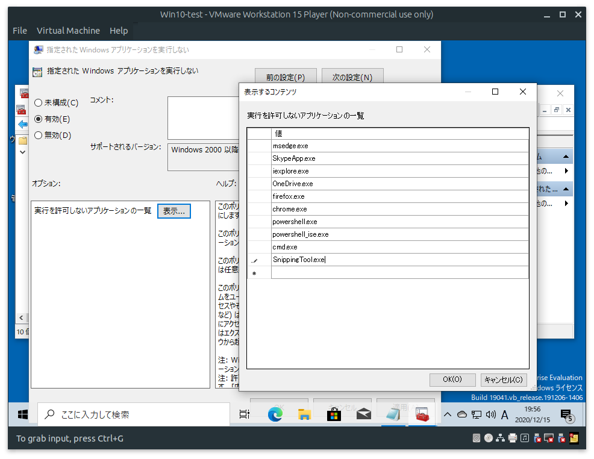
ピン留めを外すこと
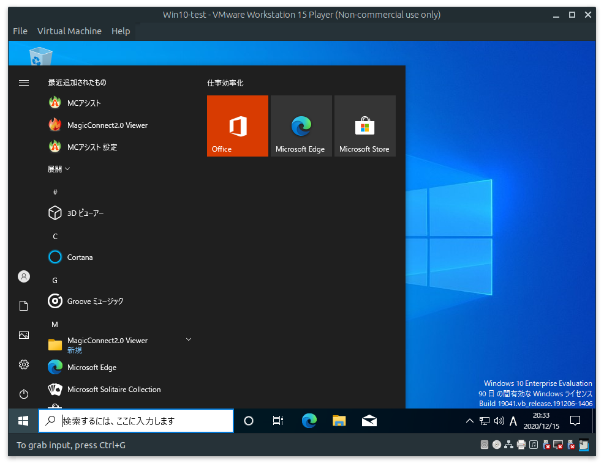
外した後の状態
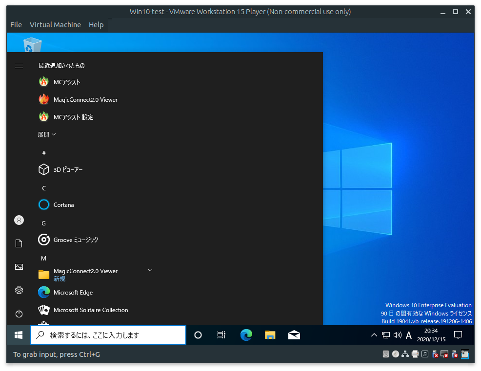
スタートメニューの表示をやめる、など（下記の有効にしている14項目）
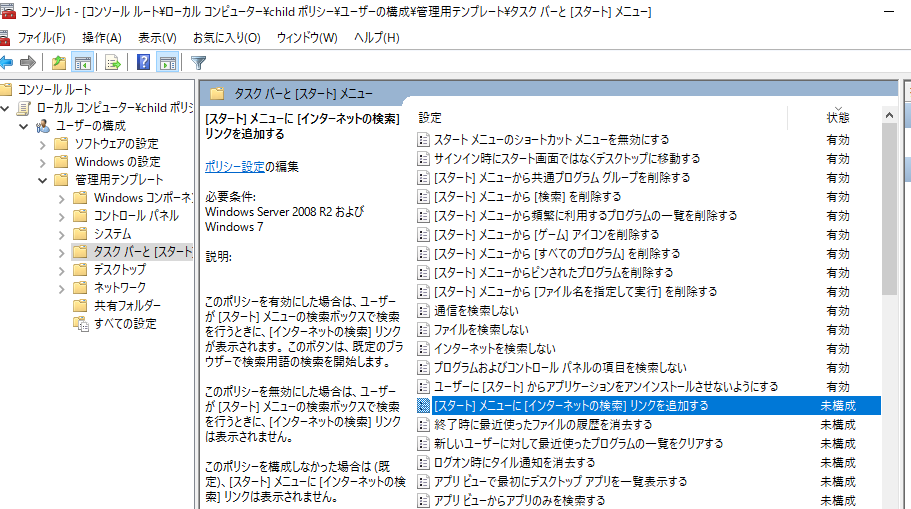
その他のセキュリティ関係
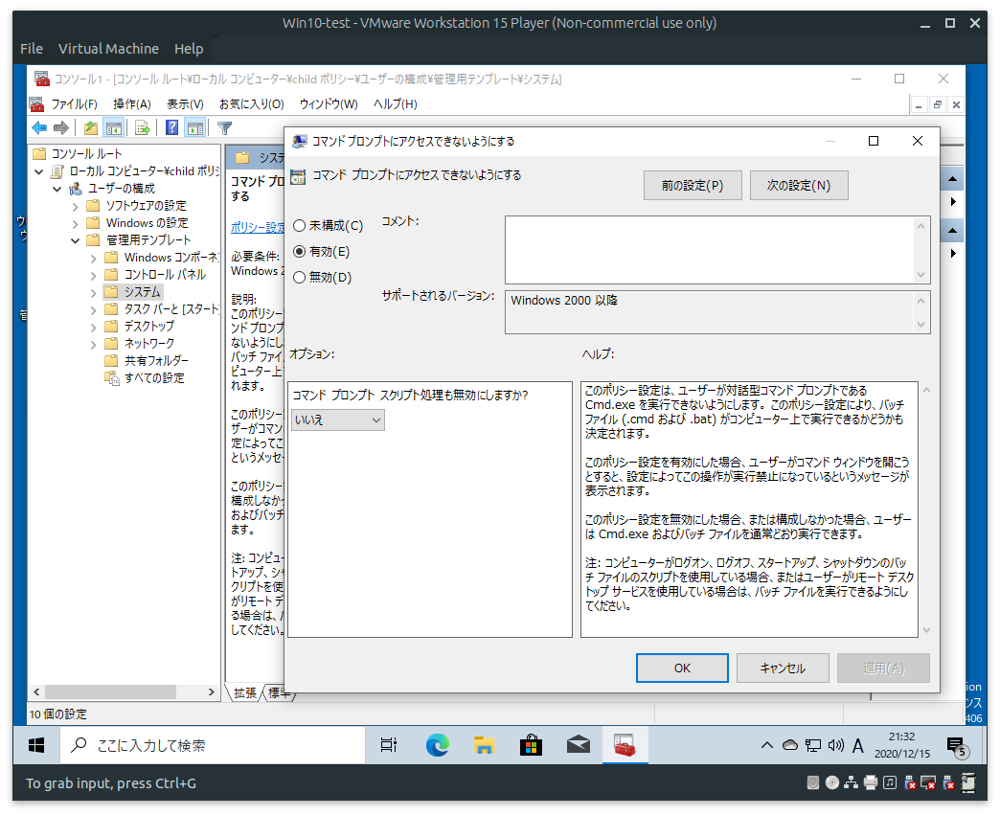
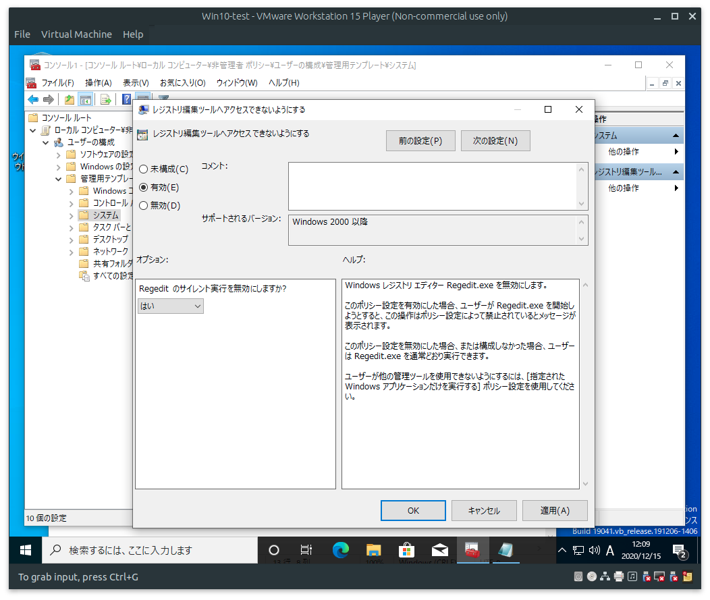
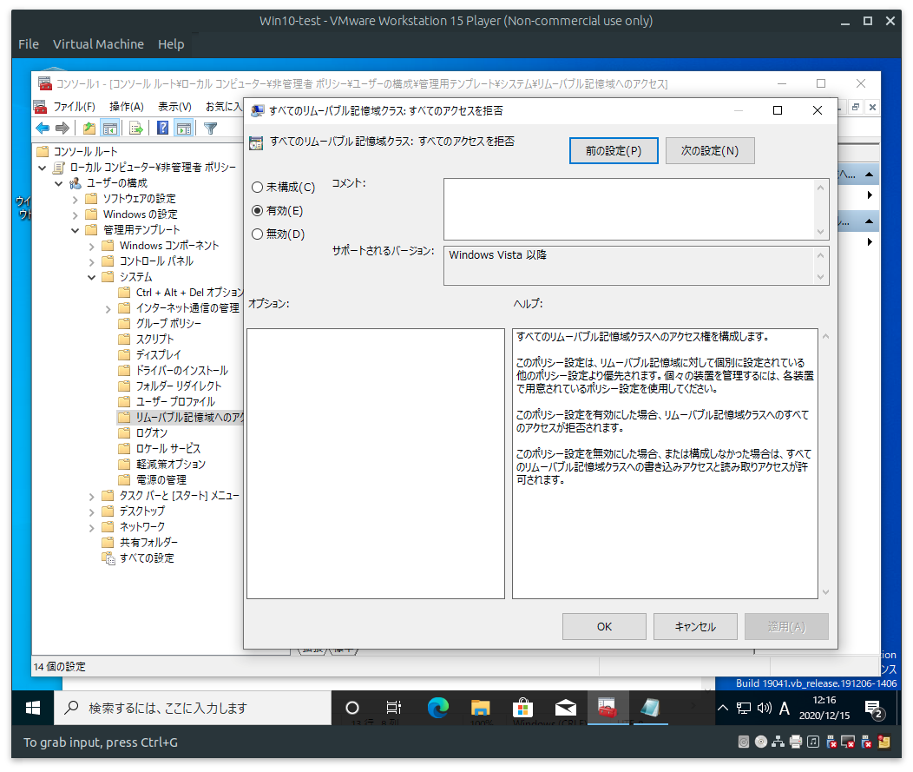
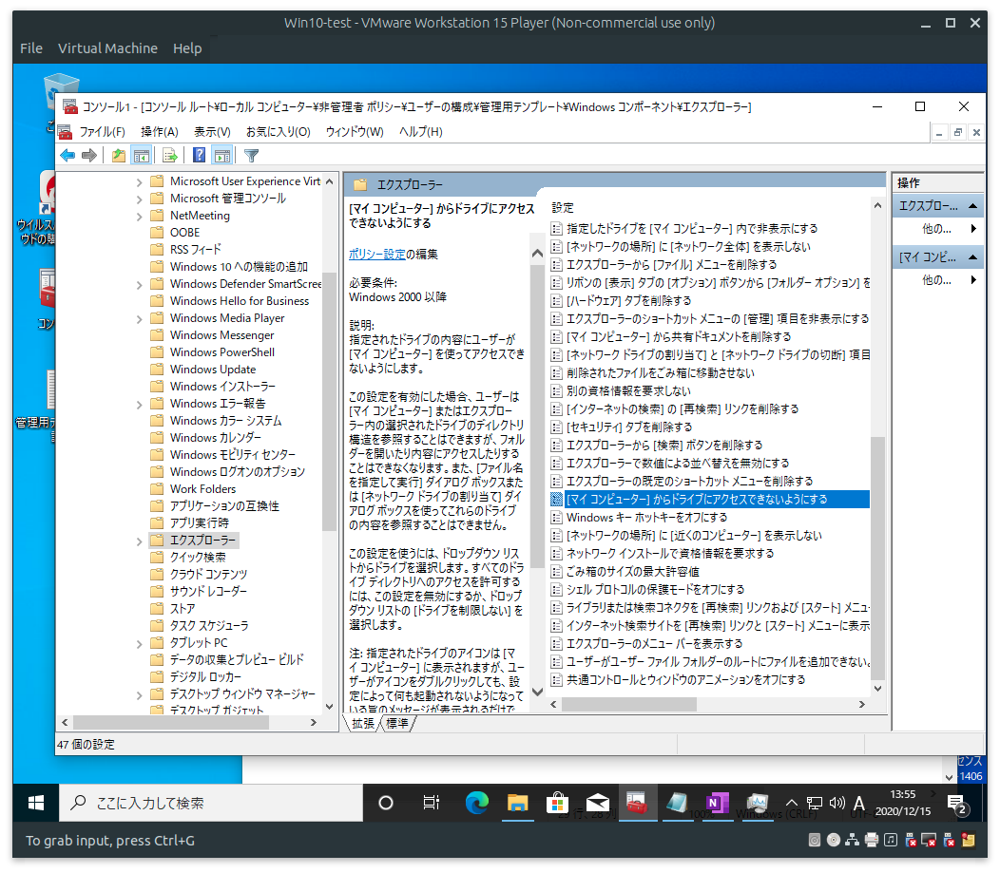
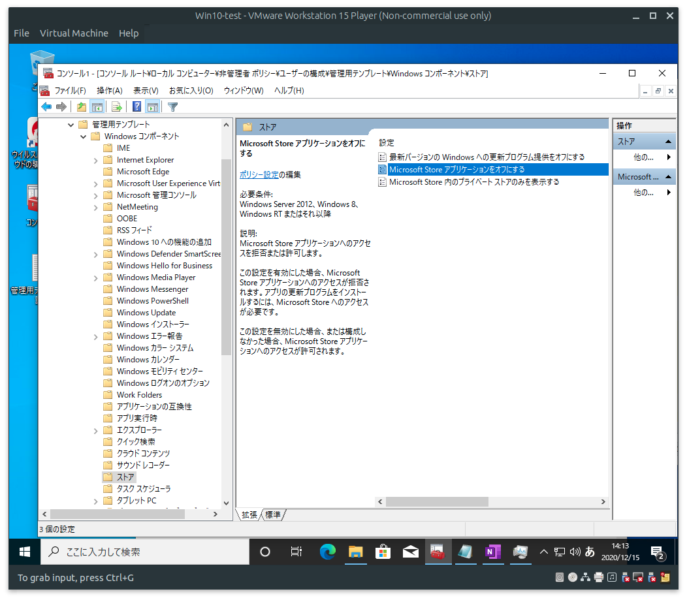
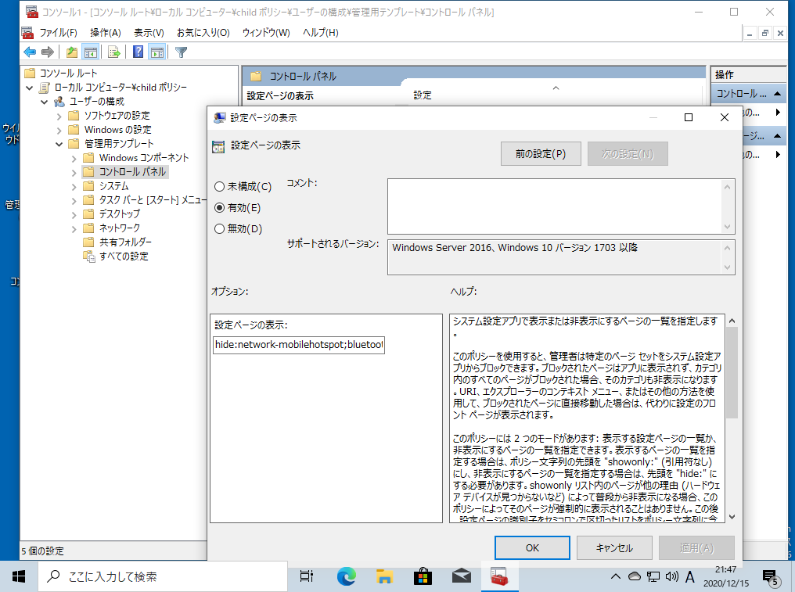
完成形
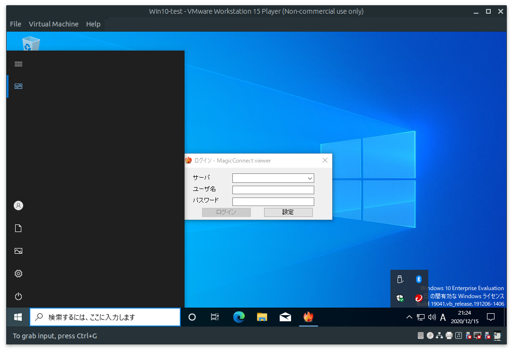